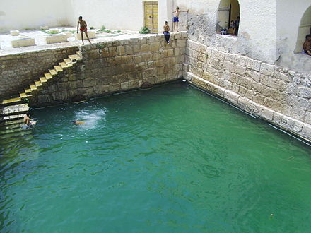

Home
Gafsa (arabe : ڨفصة Écouter [gɑfsˤæ]), l'antique Capsa, est une ville du sud-ouest de la Tunisie et le chef-lieu du gouvernorat du même nom. Située sur la rive droite de l'oued Beyach, elle fait face à El Ksar sur la rive gauche. La municipalité abrite une population de 95 242 habitants selon le recensement de 20143 mais son agglomération, comprenant également El Ksar sur la rive gauche de l'oued Beyach, atteint quelque 130 000 habitants.
Climate
| Mois | Jan | Fev | Mars |
|---|---|---|---|
| Tmin | -2 | 0 | 5 |
| Tmax | 20 | 25 | 40 |
| Ens | 55 | 11 | 44 |
| Prec | 45 | 13 | 11 |
History
Prehistory
Capsa, the ancient name of the city of Gafsa, gave its name to the Capsian epipalaeolithic culture . Bones and traces of human activity dating back more than 8,500 years 7 have been discovered in this region. Besides the manufacture of stone and flint tools ,the Capsians produced, from bones, various tools including needles for sewing clothes from animal skins .
Antiquité et période byzantine
Au xiie siècle av. J.-C. selon la tradition littéraire, les Phéniciens fondent Utique. Les Romains occupent Capsa au iie siècle av. J.-C.. La ville se développe alors au point de devenir un municipe puis une colonie. La région est conquise vers 439 par les Vandales venus d'Europe depuis l'Hispanie plus d'une décennie auparavant. En 523 a lieu à Capsa une célèbre bataille entre les partisans du nouveau roi vandale Hildéric et les partisans d'Amalafrida, l'épouse de l'ancien roi vandale mort la même année et cousin d'Hildéric, Thrasamund. La raison de ce conflit est d'ordre religieux (lutte entre les catholiques et les chrétiens ariens) et c'est Thrasamund qui sort vainqueur de la bataille8. En 540, les Byzantins, qui ont repris la ville, la protègent d'un rempart, construit avec des matériaux de remploi romains, et la rebaptisent Justiniana. Il ne subsiste pas de vestiges repérables des monuments de l'époque romaine. Une inscription mentionne un spectacle de jeux et constitue la seule trace de l'existence d'un théâtre ou d'un amphithéâtre9,10
Phosphate
Gafsa se développe grâce à l'exploitation minière des phosphates dont le gisement découvert en 1886 est l'un des plus importants au monde. Si la Tunisie extrayait près de cinq millions de tonnes de phosphates en 2011, la production a chuté après la révolution pour atteindre 3 500 000 tonnes en 2016. La Tunisie est ainsi passée du septième rang mondial au dixième13. La Compagnie des phosphates de Gafsa a possédé sa propre ligne de chemin de fer privée jusqu'en 1966, sur la base d'une convention signée le 25 août 1896. Paradoxalement, la ville est assez pauvre et ne bénéficie pas des revenus du phosphate.